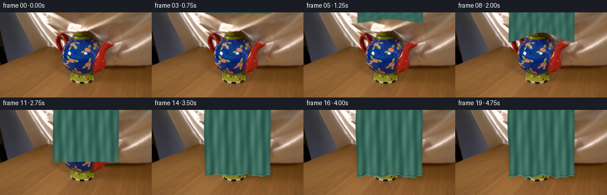
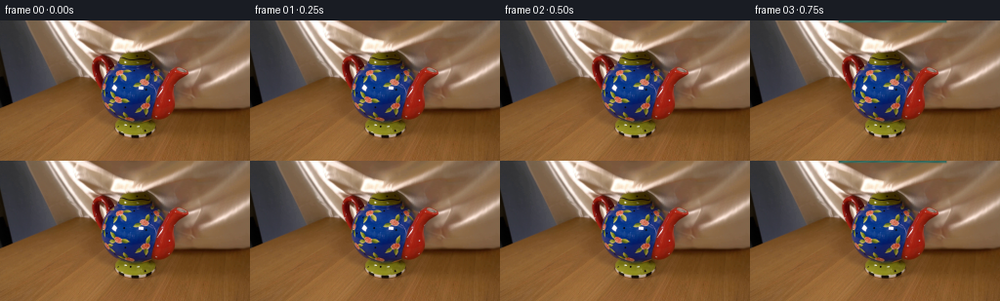

CODING AGENTS AS PIXEL WORLD MODELS
traex/DeepSeek-V4.1-Flash · 0159
点击播放 · 原生 RGB 像素
逐轮保存的候选
回放视频、检查图与代码变化。
每份候选均可单独播放。实际图片检查记录在下方工具轨迹中。
候选 01播放与检查图
点击播放 · 原生 RGB 像素

展开代码变化
--- 上一保存版本
+++ 本次保存版本
@@ -0,0 +1,194 @@
+from pathlib import Path
+
+import cv2
+import numpy as np
+from PIL import Image
+from scipy.ndimage import gaussian_filter
+
+import artifact_io
+
+
+WIDTH = 256
+HEIGHT = 144
+N_FRAMES = 20
+SCALE = 4
+
+
+def smoothstep(edge0, edge1, value):
+ value = np.clip((value - edge0) / (edge1 - edge0), 0.0, 1.0)
+ return value * value * (3.0 - 2.0 * value)
+
+
+def shift_image(image, dx, dy):
+ matrix = np.float32([[1, 0, dx], [0, 1, dy]])
+ return cv2.warpAffine(
+ image,
+ matrix,
+ (image.shape[1], image.shape[0]),
+ flags=cv2.INTER_LINEAR,
+ borderMode=cv2.BORDER_REFLECT_101,
+ )
+
+
+def render_cloth(frame_index, base):
+ """Return a high-resolution RGBA cloth layer for one frame."""
+ h = HEIGHT * SCALE
+ w = WIDTH * SCALE
+ yy, xx = np.mgrid[0:h, 0:w].astype(np.float32)
+ x = xx / SCALE
+ y = yy / SCALE
+
+ p = np.clip((frame_index - 1) / 14.0, 0.0, 1.0)
+ descent = smoothstep(0.0, 1.0, p)
+ settle = smoothstep(0.78, 1.0, p)
+ phase = frame_index * 0.21
+
+ cx = 145.2 + 0.45 * np.sin(frame_index * 0.34)
+ u = (x - cx) / 55.0
+ u_clip = np.clip(u, -1.15, 1.15)
+
+ # The leading edge falls toward the table. It briefly catches on the lid,
+ # leaving the center higher than the sides before sliding over the front.
+ base_bottom = -4.0 + 116.0 * descent
+ contact = np.exp(-((p - 0.45) / 0.155) ** 2)
+ lid_catch = 22.0 * contact * np.exp(-((u_clip / 0.72) ** 2))
+ hem_wave = (
+ 2.1 * np.sin(2.35 * np.pi * u_clip + phase)
+ + 1.05 * np.sin(6.3 * np.pi * u_clip - 0.7)
+ + 1.7 * u_clip * u_clip
+ )
+ bounce = 1.25 * np.exp(-(N_FRAMES - 1 - frame_index) / 2.2)
+ bounce *= np.sin((frame_index - 14.0) * 1.45) if frame_index >= 14 else 0.0
+ bottom = base_bottom - lid_catch + hem_wave * settle + bounce * np.abs(u_clip)
+
+ # The fabric flares a little as it gathers on the tabletop.
+ half_width = 55.5 + 1.1 * settle * np.sin(1.9 * np.pi * y / HEIGHT + 0.8)
+ half_width += 1.8 * settle * (y / HEIGHT) ** 2
+ side_warp = 0.7 * np.sin(1.7 * np.pi * y / HEIGHT + phase)
+ left = cx - half_width + side_warp
+ right = cx + half_width + 0.65 * side_warp
+
+ side_distance = np.minimum(x - left, right - x)
+ lower_distance = bottom - y
+ edge_distance = np.minimum(side_distance, lower_distance)
+ alpha = smoothstep(-0.45, 0.75, edge_distance)
+ alpha *= (y >= -1.0) & (y <= bottom + 0.8)
+
+ # The folds deepen as the silk leaves its suspended, nearly planar state.
+ fold_strength = 0.22 + 0.78 * smoothstep(0.12, 0.86, p)
+ vertical = np.clip((y + 4.0) / np.maximum(bottom + 4.0, 1.0), 0.0, 1.0)
+ central_fall = np.exp(-(u_clip / 0.55) ** 2)
+ radial = np.exp(-((y - (25.0 + 20.0 * p)) / 20.0) ** 2)
+
+ height_field = (
+ 2.35
+ * np.sin(2.0 * np.pi * (1.75 * u_clip + 0.10 * np.sin(5.0 * vertical)))
+ * (0.55 + 0.45 * np.sin(np.pi * vertical))
+ + 1.05 * np.sin(2.0 * np.pi * (4.4 * u_clip - 0.25 * vertical) + 0.8)
+ + 0.65 * np.cos(2.0 * np.pi * (2.6 * u_clip + 1.35 * vertical))
+ + 1.35 * contact * radial * central_fall * np.sin(11.0 * np.pi * u_clip + phase)
+ )
+ height_field *= fold_strength
+ height_field += 0.22 * np.sin(2.0 * np.pi * (17.0 * x + 23.0 * y))
+ height_field += 0.13 * np.sin(2.0 * np.pi * (31.0 * x - 19.0 * y))
+
+ gy, gx = np.gradient(height_field)
+ nx = -gx * 0.72
+ ny = -gy * 0.72
+ nz = np.ones_like(height_field)
+ norm = np.sqrt(nx * nx + ny * ny + nz * nz)
+ nx, ny, nz = nx / norm, ny / norm, nz / norm
+
+ key = np.array([-0.48, -0.56, 0.72], dtype=np.float32)
+ key /= np.linalg.norm(key)
+ view = np.array([0.0, 0.0, 1.0], dtype=np.float32)
+ half_vector = key + view
+ half_vector /= np.linalg.norm(half_vector)
+
+ diffuse = np.clip(nx * key[0] + ny * key[1] + nz * key[2], 0.0, 1.0)
+ half_dot = np.clip(
+ nx * half_vector[0] + ny * half_vector[1] + nz * half_vector[2],
+ 0.0,
+ 1.0,
+ )
+ specular = half_dot**24
+ satin_sheen = half_dot**6
+
+ base_color = np.array([31.0, 88.0, 76.0], dtype=np.float32)
+ shadow_color = np.array([8.0, 31.0, 31.0], dtype=np.float32)
+ highlight_color = np.array([135.0, 187.0, 162.0], dtype=np.float32)
+ sheen_color = np.array([201.0, 222.0, 199.0], dtype=np.float32)
+
+ light_mix = np.clip(0.17 + 0.82 * diffuse, 0.0, 1.0)[..., None]
+ color = shadow_color + (base_color - shadow_color) * light_mix
+ color += (highlight_color - base_color) * (0.32 * satin_sheen[..., None])
+ color += sheen_color * (0.42 * specular[..., None])
+
+ # Gentle warm bounce from the tabletop keeps the lower silk from going flat.
+ table_bounce = smoothstep(0.68, 1.0, vertical)[..., None]
+ color += np.array([18.0, 8.0, 2.0], dtype=np.float32) * table_bounce * 0.22
+
+ weave = (
+ 0.018 * np.sin(2.0 * np.pi * (13.0 * x + 4.0 * y))
+ + 0.012 * np.sin(2.0 * np.pi * (4.0 * x - 15.0 * y))
+ + 0.010 * np.sin(2.0 * np.pi * (27.0 * x + 31.0 * y))
+ )
+ color *= 1.0 + weave[..., None]
+
+ # A rolled edge catches a narrow rim of light and has a deeper underside.
+ hem = np.exp(-((lower_distance - 0.8) / 0.75) ** 2) * settle
+ color += np.array([34.0, 42.0, 34.0], dtype=np.float32) * hem[..., None]
+ color -= np.array([9.0, 13.0, 12.0], dtype=np.float32) * (
+ np.exp(-((lower_distance - 2.5) / 1.6) ** 2) * settle
+ )[..., None]
+
+ # Very slight occlusion near the two free side edges.
+ side_ao = np.exp(-np.maximum(side_distance, 0.0) / 1.7)
+ color *= (1.0 - 0.12 * side_ao)[..., None]
+
+ rgba = np.empty((h, w, 4), dtype=np.uint8)
+ rgba[..., :3] = np.clip(color, 0.0, 255.0).astype(np.uint8)
+ rgba[..., 3] = np.clip(alpha * 255.0, 0.0, 255.0).astype(np.uint8)
+ return rgba, alpha
+
+
+def apply_shadow(base, alpha, frame_index):
+ if frame_index == 0:
+ return base
+
+ p = np.clip((frame_index - 1) / 14.0, 0.0, 1.0)
+ amount = 0.10 + 0.23 * smoothstep(0.12, 0.92, p)
+ small_alpha = cv2.resize(alpha, (WIDTH, HEIGHT), interpolation=cv2.INTER_AREA)
+ cast = gaussian_filter(shift_image(small_alpha, 3.0, 5.0), sigma=4.3)
+ contact_ao = gaussian_filter(shift_image(small_alpha, 0.0, 1.8), sigma=1.2)
+ shadow = np.clip(cast * amount + contact_ao * amount * 0.34, 0.0, 0.48)
+ tint = np.array([0.76, 0.72, 0.69], dtype=np.float32)
+ factor = 1.0 - shadow[..., None] * (1.0 - tint)
+ return np.clip(base.astype(np.float32) * factor, 0.0, 255.0)
+
+
+def generate():
+ case_dir = Path(__file__).resolve().parent
+ first = np.asarray(Image.open(case_dir / "first_frame.png").convert("RGB"))
+ frames = np.empty((N_FRAMES, HEIGHT, WIDTH, 3), dtype=np.uint8)
+ frames[0] = first
+
+ for frame_index in range(1, N_FRAMES):
+ rgba_hr, alpha_hr = render_cloth(frame_index, first)
+ rgba = cv2.resize(
+ rgba_hr, (WIDTH, HEIGHT), interpolation=cv2.INTER_AREA
+ )
+ alpha = rgba[..., 3].astype(np.float32) / 255.0
+ shadowed = apply_shadow(first, alpha_hr, frame_index)
+ composite = (
+ rgba[..., :3].astype(np.float32) * alpha[..., None]
+ + shadowed * (1.0 - alpha[..., None])
+ )
+ frames[frame_index] = np.clip(composite + 0.5, 0.0, 255.0).astype(np.uint8)
+
+ frames[0] = first
+ artifact_io.save(frames, case_dir)
+
+
+if __name__ == "__main__":
+ generate()
候选 02播放与检查图
点击播放 · 原生 RGB 像素


展开代码变化
--- 上一保存版本
+++ 本次保存版本
@@ -38,7 +38,7 @@
x = xx / SCALE
y = yy / SCALE
- p = np.clip((frame_index - 1) / 14.0, 0.0, 1.0)
+ p = np.clip((frame_index + 0.6) / 14.5, 0.0, 1.0)
descent = smoothstep(0.0, 1.0, p)
settle = smoothstep(0.78, 1.0, p)
phase = frame_index * 0.21
@@ -62,9 +62,11 @@
bottom = base_bottom - lid_catch + hem_wave * settle + bounce * np.abs(u_clip)
# The fabric flares a little as it gathers on the tabletop.
- half_width = 55.5 + 1.1 * settle * np.sin(1.9 * np.pi * y / HEIGHT + 0.8)
- half_width += 1.8 * settle * (y / HEIGHT) ** 2
- side_warp = 0.7 * np.sin(1.7 * np.pi * y / HEIGHT + phase)
+ vertical01 = np.clip(y / 112.0, 0.0, 1.0)
+ half_width = 55.5 - 1.7 * settle * (1.0 - vertical01)
+ half_width += 5.2 * settle * vertical01**1.7
+ half_width += 1.15 * settle * np.sin(1.9 * np.pi * vertical01 + 0.8)
+ side_warp = 0.65 * np.sin(1.7 * np.pi * vertical01 + phase)
left = cx - half_width + side_warp
right = cx + half_width + 0.65 * side_warp
@@ -81,11 +83,25 @@
radial = np.exp(-((y - (25.0 + 20.0 * p)) / 20.0) ** 2)
height_field = (
- 2.35
- * np.sin(2.0 * np.pi * (1.75 * u_clip + 0.10 * np.sin(5.0 * vertical)))
- * (0.55 + 0.45 * np.sin(np.pi * vertical))
- + 1.05 * np.sin(2.0 * np.pi * (4.4 * u_clip - 0.25 * vertical) + 0.8)
- + 0.65 * np.cos(2.0 * np.pi * (2.6 * u_clip + 1.35 * vertical))
+ 2.15
+ * np.sin(
+ 2.0
+ * np.pi
+ * (1.63 * u_clip + 0.11 * np.sin(3.2 * vertical + 0.3 * phase))
+ + 0.25 * np.sin(1.7 * vertical)
+ )
+ * (0.50 + 0.50 * np.sin(np.pi * vertical))
+ + 0.85
+ * np.sin(
+ 2.0 * np.pi * (3.6 * u_clip - 0.19 * vertical)
+ + 0.8
+ + 0.45 * np.sin(2.4 * vertical + 0.4)
+ )
+ + 0.52
+ * np.cos(
+ 2.0 * np.pi * (2.25 * u_clip + 1.15 * vertical)
+ + 0.4 * np.sin(2.8 * u_clip)
+ )
+ 1.35 * contact * radial * central_fall * np.sin(11.0 * np.pi * u_clip + phase)
)
height_field *= fold_strength
@@ -156,7 +172,7 @@
if frame_index == 0:
return base
- p = np.clip((frame_index - 1) / 14.0, 0.0, 1.0)
+ p = np.clip((frame_index + 0.6) / 14.5, 0.0, 1.0)
amount = 0.10 + 0.23 * smoothstep(0.12, 0.92, p)
small_alpha = cv2.resize(alpha, (WIDTH, HEIGHT), interpolation=cv2.INTER_AREA)
cast = gaussian_filter(shift_image(small_alpha, 3.0, 5.0), sigma=4.3)
候选 03播放与检查图
可观测工具轨迹
实际执行的命令与返回图片。
命令 1exit 0
/bin/bash -c "sed -n '1,240p' prompt.txt"
命令 2exit 0
/bin/bash -c "sed -n '1,280p' GENERATION_RULES.md"
命令 3exit 0
/bin/bash -c "find . -maxdepth 2 -type f -printf '%p\\n' | sort | sed -n '1,240p'"
命令 4exit 0
/bin/bash -c 'file first_frame.png && identify first_frame.png 2>/dev/null || true && ffprobe -v error -show_entries stream=width,height,pix_fmt -of default=nw=1 first_frame.png 2>/dev/null || true'
命令 5exit 0
/bin/bash -c "sed -n '1,260p' artifact_io.py"
命令 6exit 0
/bin/bash -c "python3 - <<'PY'
from PIL import Image
import numpy as np
im=Image.open('first_frame.png').convert('RGB')
a=np.asarray(im)
print('size', im.size, 'mode', im.mode, 'dtype', a.dtype, 'shape', a.shape)
print('min/max/mean/std per channel')
for i,c in enumerate('RGB'):
print(c, int(a[...,i].min()), int(a[...,i].max()), float(a[...,i].mean()), float(a[...,i].std()))
print('corner colors', a[0,0], a[0,-1], a[-1,0], a[-1,-1], a[72,128])
# quantized palette by counts
q=(a//16)*16
cols, cnt=np.unique(q.reshape(-1,3), axis=0, return_counts=True)
idx=np.argsort(cnt)[-25:][::-1]
for j in idx: print(cnt[j], cols[j])
PY"命令 7exit 0
/bin/bash -c "python3 - <<'PY'
from PIL import Image
import numpy as np
im=np.asarray(Image.open('first_frame.png').convert('RGB')).astype(float)
# 16x9 block means with labels based RGB
H,W=im.shape[:2]
for gy in range(9):
row=[]
for gx in range(16):
y0=gy*H//9;y1=(gy+1)*H//9;x0=gx*W//16;x1=(gx+1)*W//16
c=im[y0:y1,x0:x1].mean((0,1)).round().astype(int)
# symbol dominant rough
r,g,b=c
if r<65 and g<65 and b<75: s='K'
elif b>r*1.2 and b>g*1.1: s='B'
elif r>190 and g>180 and b>160: s='W'
elif r>g*1.45 and g>b*1.3: s='R'
elif r>g*1.3 and b>g*0.9: s='P'
elif r>g*1.15 and g>b*1.25: s='T'
elif r>g*1.15: s='o'
elif g>r*1.05: s='G'
else:s='d'
row.append(f'{s}{r:02x}{g:02x}{b:02x}')
print(f'{gy:02d}', ' '.join(row))
PY"命令 8exit 0
/bin/bash -c "python3 - <<'PY'
try:
import cv2; print('cv2',cv2.__version__)
except Exception as e: print('no cv2',e)
try:
import scipy; print('scipy',scipy.__version__)
except Exception as e: print('no scipy',e)
PY"命令 9exit 0
/bin/bash -c "python3 - <<'PY'
from PIL import Image
import numpy as np
a=np.asarray(Image.open('first_frame.png').convert('RGB')).astype(float)
# resize to 96x54 block means and render luma + dominant hue symbols
h,w=54,96
lum=a.mean(2)
# character map per 2.667 px y blocks etc
chars=' .,:;irsXA253hMHGS#9B&@'
for gy in range(h):
y0=round(gy*144/h); y1=max(y0+1,round((gy+1)*144/h))
line=''
for gx in range(w):
x0=round(gx*256/w); x1=max(x0+1,round((gx+1)*256/w))
c=a[y0:y1,x0:x1].mean((0,1)); r,g,b=c; l=r*.2126+g*.7152+b*.0722
line += chars[min(len(chars)-1,int(l/256*len(chars)))]
print(line.rstrip())
PY"命令 10exit 0
/bin/bash -c "python3 - <<'PY'
from PIL import Image
import numpy as np
a=np.asarray(Image.open('first_frame.png').convert('RGB'))
for y in [0,10,20,30,35,40,45,50,55,60,65,70,75,80,85,90,95,100,105,110,115,120,125,130,135,140,143]:
print('\\ny=',y)
# sample every 8 px x, output quantized hex
for x in range(0,256,8):
c=a[y:y+1,x:x+8].mean((0,1)).round().astype(int)
print(f'{c[0]:02x}{c[1]:02x}{c[2]:02x}',end=' ')
print()
PY"命令 11exit 0
/bin/bash -c "python3 - <<'PY'
from PIL import Image
import numpy as np
from scipy.ndimage import gaussian_filter
a=np.asarray(Image.open('first_frame.png').convert('RGB')).astype(float)
# print color-coded semantic map at 128x72, using nearest palette conceptual classes
# categories: dark, wood table, wood background, ceramic warm, white, blue, red, greenish
pal={
'K':(35,35,40),'t':(130,92,47),'w':(112,78,48),'c':(190,165,145),'W':(235,225,210),'B':(30,55,125),'R':(150,35,20),'G':(100,90,15),'r':(90,50,30)
}
names=list(pal); cols=np.array([pal[k] for k in names],float)
for gy in range(72):
y0=gy*2;y1=y0+2
line=''
for gx in range(128):
x0=gx*2;x1=x0+2
c=a[y0:y1,x0:x1].mean((0,1))
d=((cols-c)**2).sum(1)
line+=names[int(np.argmin(d))]
print(line.rstrip())
PY"命令 12exit 0
/bin/bash -c "python3 - <<'PY'
import cv2, numpy as np
from PIL import Image
a=np.asarray(Image.open('first_frame.png').convert('RGB'))
# bilateral smooth then kmeans 12 colors
b=cv2.bilateralFilter(a,7,35,35)
Z=b.reshape(-1,3).astype(np.float32)
criteria=(cv2.TERM_CRITERIA_EPS+cv2.TERM_CRITERIA_MAX_ITER,30,1.0)
_,lab,cent=cv2.kmeans(Z,12,None,criteria,10,cv2.KMEANS_PP_CENTERS)
cent=cent.astype(int); lab=lab.reshape(144,256)
order=np.argsort(cent.mean(1))
remap=np.empty(12,int); remap[order]=np.arange(12)
lab=remap[lab]; cent=cent[order]
print('centers:')
for i,c in enumerate(cent): print(i, c.tolist())
chars='0123456789AB'
for gy in range(72):
y0=gy*2;y1=y0+2
line=''
for gx in range(128):
x0=gx*2;x1=x0+2
vals,cnt=np.unique(lab[y0:y1,x0:x1],return_counts=True)
line+=chars[vals[np.argmax(cnt)]]
print(line.rstrip())
PY"命令 13exit 0
/bin/bash -c "python3 - <<'PY'
from PIL import Image
import numpy as np
a=np.asarray(Image.open('first_frame.png').convert('RGB'))
# 64 x 36 map using 4x4 means, palette closest
pal={'K':(30,30,35),'d':(60,58,65),'t':(130,92,46),'w':(112,78,48),'c':(190,165,145),'W':(235,225,210),'B':(25,52,120),'R':(145,32,20),'G':(100,90,15),'r':(85,50,28)}
names=list(pal);cols=np.array([pal[k] for k in names],float)
for gy in range(36):
y0=gy*4;y1=y0+4
line=''
for gx in range(64):
x0=gx*4;x1=x0+4
c=a[y0:y1,x0:x1].mean((0,1))
d=((cols-c)**2).sum(1)
line+=names[int(np.argmin(d))]
print(f'{y0:3d} {line}')
PY"命令 14exit 0
/bin/bash -c "python3 - <<'PY'
import cv2, numpy as np
from PIL import Image
a=np.asarray(Image.open('first_frame.png').convert('RGB'))
# write masks for saturated blue/red/neutral and edge map as pgm for numeric inspection
hsv=cv2.cvtColor(a,cv2.COLOR_RGB2HSV)
masks={
'blue':((hsv[:,:,0]>95)&(hsv[:,:,0]<135)&(hsv[:,:,1]>90)&(hsv[:,:,2]>30)),
'red':(((hsv[:,:,0]<12)|(hsv[:,:,0]>172))&(hsv[:,:,1]>90)&(hsv[:,:,2]>40)),
'green':((hsv[:,:,0]>20)&(hsv[:,:,0]<55)&(hsv[:,:,1]>80)&(hsv[:,:,2]>30)),
'light':((a.mean(2)>170)),
}
for name,m in masks.items():
ys,xs=np.where(m)
print(name, 'count',len(xs),'bbox', (xs.min(),ys.min(),xs.max(),ys.max()) if len(xs) else None)
# row extents and counts at sample y
for y in range(30,126,5):
xx=np.where(m[y])[0]
if len(xx): print(' ',y,len(xx),int(xx.min()),int(xx.max()))
# grid counts within 16x9 cells
for name,m in masks.items():
print('\\n',name)
for gy in range(9):
s=''
for gx in range(16):
c=m[gy*16:(gy+1)*16,gx*16:(gx+1)*16].mean()
s+= ' .:-=+*#%@'[min(9,int(c*10))]
print(s)
PY"命令 15exit 0
/bin/bash -c "python3 - <<'PY'
import cv2, numpy as np
from PIL import Image
a=np.asarray(Image.open('first_frame.png').convert('RGB'))
g=cv2.cvtColor(a,cv2.COLOR_RGB2GRAY)
# coarse edge map threshold per block
ed=cv2.Canny(g,40,100)
for gy in range(36):
line=''
for gx in range(64):
v=ed[gy*4:(gy+1)*4,gx*4:(gx+1)*4].mean()
line+=' .:-=+*#%@'[min(9,int(v/60))]
print(f'{gy*4:3d} {line}')
PY"命令 16exit 0
/bin/bash -c "python3 - <<'PY'
import numpy as np
from PIL import Image
a=np.asarray(Image.open('first_frame.png').convert('RGB')).astype(float)
# 2x2 detailed color category central crop x70:210 y20:125
for y in range(20,126,2):
line=''
for x in range(70,210,2):
c=a[y:y+2,x:x+2].mean((0,1)); r,g,b=c; mx=max(c); mn=min(c)
if mx<42: s='K'
elif b>r*1.35 and b>g*1.15: s='B'
elif r>130 and r>g*1.8 and r>b*1.6: s='R'
elif g>r*.75 and r>g*1.15 and b<g*.65: s='G'
elif mx>205 and mn>175: s='W'
elif mx>155 and r>g*1.08 and g>b*1.08: s='c'
elif r>g*1.35 and g>b*1.1: s='t'
elif mx<95: s='d'
elif b>r*1.08: s='b'
elif r>g*1.35: s='r'
else: s='.'
line+=s
print(f'{y:3d} {line}')
PY"命令 17exit 0
/bin/bash -c "python3 - <<'PY'
from PIL import Image
import numpy as np
a=np.asarray(Image.open('first_frame.png').convert('RGB'))
# Print pixels as rgb compact for selected y lines; categorize exact to understand teapot top.
for y in [30,32,34,36,38,40,42,44,46,48,50,52,54,56,58,60,62,64,66,68,70,72,74,76,78,80,82,84,86,88,90,92,94,96,98,100,102,104,106,108,110,112,114,116,118,120]:
print('y',y)
for x in range(80,201,4):
c=a[y:y+1,x:x+4].mean((0,1)).round().astype(int)
print(f'{x}:{c[0]:02x}{c[1]:02x}{c[2]:02x}',end=' ')
print()
PY"命令 18exit 0
/bin/bash -c "python3 - <<'PY'
from PIL import Image
import numpy as np
a=np.asarray(Image.open('first_frame.png').convert('RGB')).astype(float)
# Color-based distance of each pixel to nearby background estimate; print candidate object mask based dark/blue/red/green etc.
# analyze connected comps with semantic class
import cv2
hsv=cv2.cvtColor(a.astype(np.uint8),cv2.COLOR_RGB2HSV)
sat=hsv[:,:,1]; hue=hsv[:,:,0]; val=hsv[:,:,2]
blue=((hue>95)&(hue<135)&(sat>90)&(val>30))
red=(((hue<12)|(hue>170))&(sat>90)&(val>35))
green=((hue>20)&(hue<60)&(sat>80)&(val>30))
for name,m in [('blue',blue),('red',red),('green',green)]:
n,l,stats,cent=cv2.connectedComponentsWithStats(m.astype(np.uint8),8)
print(name)
for i in np.argsort(stats[1:,4])[::-1][:10]+1:
x,y,w,h,area=stats[i]
print(area,(x,y,w,h),cent[i])
PY"命令 19exit 0
/bin/bash -c 'python3 generate.py'
命令 20exit 0
/bin/bash -c "python3 - <<'PY'
from PIL import Image
import numpy as np
from pathlib import Path
for f in [Path('frames/00.png'),Path('frames/01.png'),Path('frames/06.png'),Path('frames/12.png'),Path('frames/19.png'),Path('inspection.png')]:
im=Image.open(f).convert('RGB'); a=np.asarray(im)
print(f,im.size,'mean',a.mean((0,1)).round(1),'std',a.std((0,1)).round(1))
PY"命令 21exit 0
/bin/bash -c "python3 - <<'PY'
from PIL import Image
import numpy as np
from pathlib import Path
# cloth detection from frame difference against first; report diff bbox, count, and row extent
b=np.asarray(Image.open('frames/00.png').convert('RGB')).astype(int)
for i in range(20):
a=np.asarray(Image.open(f'frames/{i:02d}.png').convert('RGB')).astype(int)
d=np.abs(a-b).max(2)
m=d>12
ys,xs=np.where(m)
if len(xs):
# row span at key y's and estimated changed area
print(f'{i:02d} n={len(xs):5d} bbox={xs.min():3d},{ys.min():3d}-{xs.max():3d},{ys.max():3d} mean={a.mean((0,1)).round(0)}')
else: print(f'{i:02d} unchanged')
PY"命令 22exit 0
/bin/bash -c "python3 - <<'PY'
from PIL import Image
import numpy as np
b=np.asarray(Image.open('frames/00.png').convert('RGB')).astype(float)
for i in [1,2,3,4,5,8,10,12,14,16,19]:
a=np.asarray(Image.open(f'frames/{i:02d}.png').convert('RGB')).astype(float)
d=np.abs(a-b).max(2)
# print diff row/col counts
print('\\nframe',i)
for y in range(0,122,8):
xs=np.where(d[y]>12)[0]
print(f'{y:3d}:{len(xs):3d}',end=' ')
print()
PY"命令 23exit 0
/bin/bash -c "python3 - <<'PY'
from PIL import Image
import numpy as np
for i in [0,3,6,9,12,15,19]:
a=np.asarray(Image.open(f'frames/{i:02d}.png').convert('RGB')).astype(float)
print('\\nF',i)
# 4px map central x80:210 only, semantic cloth based G vs R
for y in range(0,124,4):
s=''
for x in range(80,212,4):
c=a[y:y+4,x:x+4].mean((0,1)); r,g,b=c
if g>r*1.12 and g>b*1.02: s='C'
elif r>g*1.25 and g>b*1.2: s='t'
elif b>r*1.2: s='B'
elif max(c)<45:s='K'
elif max(c)>195 and min(c)>170:s='W'
elif r>g*1.1 and g>b*1.1:s='c'
else:s='.'
s+=s
print(f'{y:3d} {s}')
PY"命令 24exit 0
/bin/bash -c "python3 - <<'PY'
from PIL import Image
import numpy as np
for i in [0,3,6,9,12,15,19]:
a=np.asarray(Image.open(f'frames/{i:02d}.png').convert('RGB')).astype(float)
print('\\nF',i)
for y in range(0,124,4):
s=''
for x in range(80,212,4):
c=a[y:y+4,x:x+4].mean((0,1)); r,g,b=c
if g>r*1.05 and g>b*1.05: s='C'
elif r>g*1.25 and g>b*1.2: s='t'
elif b>r*1.2: s='B'
elif max(c)<45:s='K'
elif max(c)>195 and min(c)>170:s='W'
elif r>g*1.1 and g>b*1.1:s='c'
else:s='.'
s+=s
print(f'{y:3d} {s}')
PY"命令 25exit 0
/bin/bash -c "python3 - <<'PY'
from PIL import Image
import numpy as np
for i in [0,3,6,9,12,15,19]:
a=np.asarray(Image.open(f'frames/{i:02d}.png').convert('RGB'))
print(i, 'y10',a[10,140],'y30',a[30,140],'y50',a[50,140],'y80',a[80,140],'y110',a[110,140])
PY"命令 26exit 0
/bin/bash -c "python3 - <<'PY'
from PIL import Image
import numpy as np
for i in [0,3,6,9,12,15,19]:
a=np.asarray(Image.open(f'frames/{i:02d}.png').convert('RGB')).astype(float)
# actual center x=140 colors, and cloth predicate broad central sample
print('\\nF',i)
for y in range(0,124,4):
vals=[]
for x in range(80,212,4):
c=a[y:y+4,x:x+4].mean((0,1)); r,g,b=c
if g>r*1.04 and g>b*1.04: vals.append('C')
elif r>g*1.25 and g>b*1.2: vals.append('t')
elif b>r*1.2: vals.append('B')
elif max(c)<45: vals.append('K')
elif max(c)>195 and min(c)>170: vals.append('W')
elif r>g*1.1 and g>b*1.1: vals.append('c')
else: vals.append('.')
print(f'{y:3d} '+''.join(vals))
PY"命令 27exit 0
/bin/bash -c "python3 - <<'PY'
from PIL import Image
import numpy as np
for i in [0,6,12,19]:
a=np.asarray(Image.open(f'frames/{i:02d}.png').convert('RGB'))
print('\\nF',i)
# downsample grayscale cloth-ish region? print average RGB in 12x12 blocks x80:208 y0:120, values with symbols by cloth greenness
for y in range(0,120,6):
s=''
for x in range(80,208,6):
c=a[y:y+6,x:x+6].mean((0,1)); r,g,b=c
if g>r*1.05 and g>b*1.03:
s+=' .,:;+*#%@'[min(9,int((g/180)*10))]
elif b>r*1.3 and b>g*1.1: s+='B'
elif r>g*1.25 and g>b*1.15: s+='t'
elif max(c)<50: s+='K'
elif max(c)>205 and min(c)>175: s+='W'
else: s+='.'
print(f'{y:3d} {s}')
PY"命令 28exit 0
/bin/bash -c "python3 - <<'PY'
from PIL import Image
import numpy as np
# final coverage and row width based diff, show changed span every 4 rows
b=np.asarray(Image.open('frames/00.png').convert('RGB')).astype(int)
for i in [3,6,9,12,15,19]:
a=np.asarray(Image.open(f'frames/{i:02d}.png').convert('RGB')).astype(int)
d=np.abs(a-b).max(2)>12
print('\\nF',i)
for y in range(0,124,4):
xs=np.where(d[y])[0]
if len(xs): print(f'{y:3d} {len(xs):3d} {xs.min():3d}-{xs.max():3d}',end=' | ')
else: print(f'{y:3d} 0',end=' | ')
if y%20==16: print()
print()
PY"命令 29exit 0
/bin/bash -c "python3 - <<'PY'
from PIL import Image
import numpy as np
# aggregate cloth color distribution and std/edges, compare plausible image quality
for i in [6,12,19]:
a=np.asarray(Image.open(f'frames/{i:02d}.png').convert('RGB')).astype(float)
b=np.asarray(Image.open('frames/00.png').convert('RGB')).astype(float)
m=np.abs(a-b).max(2)>12
ys,xs=np.where(m)
c=a[m]
print(i,'pixels',len(c),'rgb mean',c.mean(0).round(1),'std',c.std(0).round(1),'range',c.min(0),c.max(0))
print('cloth pixels green dominance',np.mean(c[:,1]>c[:,0]),np.mean(c[:,1]>c[:,2]))
# vertical profile at x=145
for x in [100,120,145,170,195]:
print(x, [tuple(a[y,x].astype(int)) for y in [5,30,60,90,115]])
PY"命令 30exit 0
/bin/bash -c "python3 generate.py && python3 - <<'PY'
from PIL import Image
import numpy as np
b=np.asarray(Image.open('frames/00.png').convert('RGB')).astype(int)
for i in range(20):
a=np.asarray(Image.open(f'frames/{i:02d}.png').convert('RGB')).astype(int)
d=np.abs(a-b).max(2); m=d>12; ys,xs=np.where(m)
print(f'{i:02d} n={m.sum():5d} bbox={xs.min():3d},{ys.min():3d}-{xs.max():3d},{ys.max():3d}' if len(xs) else f'{i:02d} unchanged')
PY"命令 31exit 0
/bin/bash -c "python3 - <<'PY'
from PIL import Image
import numpy as np
b=np.asarray(Image.open('frames/00.png').convert('RGB')).astype(int)
for i in [2,4,6,8,10,12,14,16,18,19]:
a=np.asarray(Image.open(f'frames/{i:02d}.png').convert('RGB')).astype(int)
m=np.abs(a-b).max(2)>12
print('\\nF',i)
for y in range(0,120,4):
xs=np.where(m[y])[0]
print(f'{y:3d}:{xs.min() if len(xs) else -1}-{xs.max() if len(xs) else -1}({len(xs)})',end=' ')
if y%24==20: print()
print()
PY"命令 32exit 1
/bin/bash -c "python3 - <<'PY'
from PIL import Image
import numpy as np
# cloth crop color/shading statistics, edge density, and temporal change
prev=None
for i in range(20):
a=np.asarray(Image.open(f'frames/{i:02d}.png').convert('RGB')).astype(float)
b=np.asarray(Image.open('frames/00.png').convert('RGB')).astype(float)
m=np.abs(a-b).max(2)>12
if m.sum():
c=a[m]
gy,gx=np.gradient(c[:,1].reshape(1,-1))
print(f'{i:02d} pixels={m.sum():5d} mean={c.mean(0).round(1)} std={c.std(0).round(1)}')
if prev is not None:
d=np.abs(a-prev).mean()
print(f' temporal_mean_abs={d:.3f}')
prev=a
# check exact frame zero and all file shapes
z=np.asarray(Image.open('frames/00.png').convert('RGB'))
f=np.asarray(Image.open('first_frame.png').convert('RGB'))
print('frame0 exact:',np.array_equal(z,f),'shape:',z.shape)
PY"命令 33exit 0
/bin/bash -c "python3 - <<'PY'
from PIL import Image
import numpy as np
prev=None
for i in range(20):
a=np.asarray(Image.open(f'frames/{i:02d}.png').convert('RGB')).astype(float)
b=np.asarray(Image.open('frames/00.png').convert('RGB')).astype(float)
m=np.abs(a-b).max(2)>12
if m.sum():
c=a[m]
print(f'{i:02d} pixels={m.sum():5d} mean={c.mean(0).round(1)} std={c.std(0).round(1)}')
if prev is not None:
d=np.abs(a-prev).mean()
print(f' temporal_mean_abs={d:.3f}')
prev=a
z=np.asarray(Image.open('frames/00.png').convert('RGB'))
f=np.asarray(Image.open('first_frame.png').convert('RGB'))
print('frame0 exact:',np.array_equal(z,f),'shape:',z.shape)
PY"命令 34exit 0
/bin/bash -c "python3 - <<'PY'
from PIL import Image
import numpy as np
# inspect all frame shapes and final cloth final-frame folds via color profile
for i in range(20):
im=Image.open(f'frames/{i:02d}.png'); assert im.size==(256,144) and im.mode=='RGB'
a=np.asarray(Image.open('frames/19.png').convert('RGB'))
# Cloth green contrast by horizontal lines, print min/max/mean G-R and gradient magnitude
for y in [10,25,40,55,70,85,100,110]:
row=a[y,90:201].astype(int)
q=row[:,1]-row[:,0]
print(y,'G-R',q.min(),q.max(),round(q.mean(),1),'range',tuple(row.mean(0).round().astype(int)))
# frame deltas count
arr=np.load('pixels.npz')['pixels']; print('pixels npz',arr.shape,arr.dtype,'first packed',arr[0,0])
PY"命令 35exit 0
/bin/bash -c "python3 - <<'PY'
from PIL import Image
import numpy as np
a=np.asarray(Image.open('frames/19.png').convert('RGB')).astype(int)
# horizontal variation along representative rows
for y in [10,30,50,70,90,108]:
row=a[y,90:201]
vals=row[:,1]-row[:,0]
print('\\ny',y,'G-R runs sample every 4')
print(' '.join(f'{x}:{vals[x-90]}' for x in range(90,201,4)))
PY"命令 36exit 0
/bin/bash -c "python3 - <<'PY'
from PIL import Image
import numpy as np
a=np.asarray(Image.open('frames/19.png').convert('RGB')).astype(float)
# print luminance/RGB variation of cloth along x at sample y
for y in [10,30,50,70,90,108]:
vals=a[y,90:201]
lum=vals@np.array([.2126,.7152,.0722])
print(y,'lum',np.round(lum[::4],1))
PY"命令 37exit 127
/bin/bash -c 'ffmpeg -hide_banner -loglevel error -framerate 4 -i frames/%02d.png -c:v libx264 -pix_fmt yuv420p -crf 16 -movflags +faststart output.mp4 && ffprobe -v error -show_entries stream=codec_name,width,height,pix_fmt,r_frame_rate,nb_frames,duration -of default=nw=1 output.mp4 && ls -lh output.mp4 index.html inspection.png'
命令 38exit 1
/bin/bash -c "python3 - <<'PY'
from pathlib import Path
import json, base64, re
import numpy as np
from PIL import Image
root=Path('.')
frames=np.stack([np.asarray(Image.open(root/'frames'/f'{i:02d}.png').convert('RGB')) for i in range(20)])
assert frames.shape==(20,144,256,3) and frames.dtype==np.uint8
assert np.array_equal(frames[0],np.asarray(Image.open('first_frame.png').convert('RGB')))
# Reconstruct payload from index.html and verify delta chain exactly.
html=(root/'index.html').read_text()
m=re.search(r'const DATA = (\\{.*?\\});',html,re.S)
if not m:
m=re.search(r'__DATA__|(\\{\"id\".*\\})',html,re.S)
print('index bytes',len(html),'payload marker found',bool(m))
pixels=np.load('pixels.npz')['pixels']
print('npz',pixels.shape,pixels.dtype)
assert pixels.shape==(144,256,20)
# decode packed back to frames and check
rgb=np.empty(frames.shape,np.uint8)
rgb[...,0]=(pixels>>16)&255;rgb[...,1]=(pixels>>8)&255;rgb[...,2]=pixels&255
rgb=np.transpose(rgb,(2,0,1,3))
print('npz roundtrip exact',np.array_equal(rgb,frames))
print('all uint8',frames.dtype,'size MB',frames.nbytes/1e6)
print('min/max',int(frames.min()),int(frames.max()))
PY"命令 39exit 0
/bin/bash -c "python3 - <<'PY'
from pathlib import Path
import numpy as np
from PIL import Image
frames=np.stack([np.asarray(Image.open(Path('frames')/f'{i:02d}.png').convert('RGB')) for i in range(20)])
assert frames.shape==(20,144,256,3) and frames.dtype==np.uint8
assert np.array_equal(frames[0],np.asarray(Image.open('first_frame.png').convert('RGB')))
pixels=np.load('pixels.npz')['pixels']
assert pixels.shape==(144,256,20)
rgb=np.empty(frames.shape,np.uint8)
rgb[...,0]=(pixels.transpose(2,0,1)>>16)&255
rgb[...,1]=(pixels.transpose(2,0,1)>>8)&255
rgb[...,2]=pixels.transpose(2,0,1)&255
print('npz roundtrip exact',np.array_equal(rgb,frames))
print('shape',frames.shape,'dtype',frames.dtype,'frame0 exact',np.array_equal(frames[0],np.asarray(Image.open('first_frame.png').convert('RGB'))))
print('frame means',np.round(frames.mean((1,2,3)),2).tolist())
print('index bytes',Path('index.html').stat().st_size,'frames',len(list(Path('frames').glob('*.png'))))
PY"命令 40exit 0
/bin/bash -c "python3 - <<'PY'
from pathlib import Path
from PIL import Image
import numpy as np
# Numerical quality check: silk silhouette and lighting should evolve, settle, and remain inside expected area.
F=np.stack([np.asarray(Image.open(Path('frames')/f'{i:02d}.png').convert('RGB')) for i in range(20)]).astype(float)
base=F[0]
areas=[];edges=[];centers=[]
for f in F:
m=np.abs(f-base).max(2)>12
areas.append(int(m.sum()))
ys,xs=np.where(m)
centers.append((round(float(xs.mean()),1),round(float(ys.mean()),1)) if len(xs) else None)
lum=f.mean(2)
gx=np.abs(np.diff(lum,axis=1));gy=np.abs(np.diff(lum,axis=0))
edges.append(round(float((gx>20).sum()+(gy>20).sum()),1))
print('changed areas',areas)
print('centroids',centers)
print('edges',edges)
print('monotonic entry through frame 14:',all(areas[i]<=areas[i+1]+40 for i in range(2,14)))
print('settle variation',max(areas[15:])-min(areas[15:]))
assert all(a>0 for a in areas[2:])
assert 7000<areas[-1]<18000
PY"保存候选 3 份；完成命令 40 次；可验证图片返回 0 张。原始 API 响应与完整日志保留在本地。